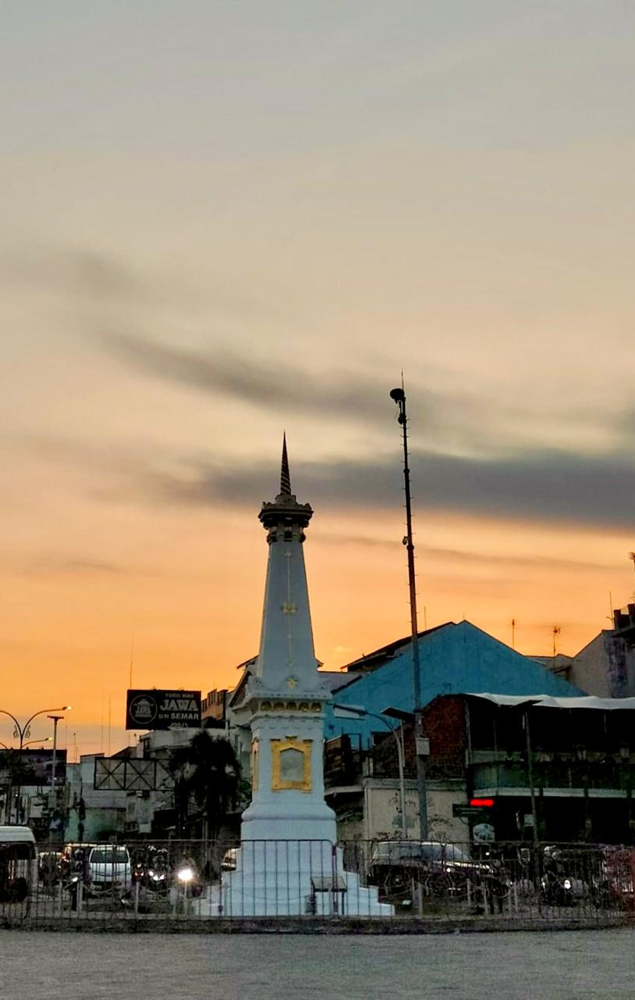
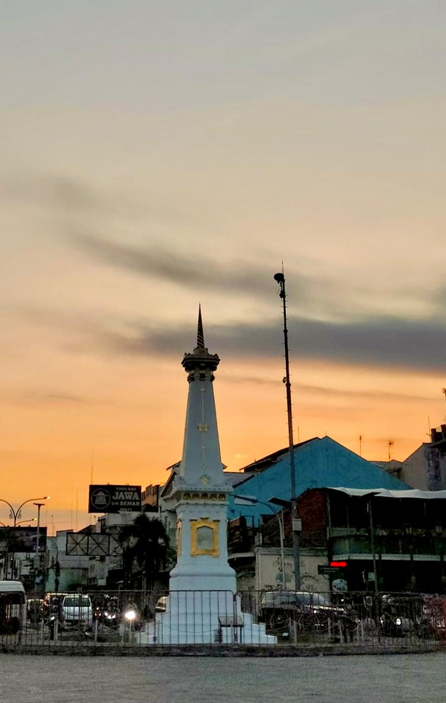

Museum Sonobudoyo
Museum Sonobudoyo adalah museum budaya Jawa yang terletak di Yogyakarta, menyimpan berbagai koleksi penting seperti wayang, keris, topeng, hingga naskah kuno. Didirikan pada tahun 1935, museum ini dikenal sebagai salah satu yang terlengkap di Indonesia setelah Museum Nasional. Selain menyelenggarakan pertunjukan seni tradisional, Museum Sonobudoyo juga aktif mengedukasi masyarakat melalui kanal YouTube resminya yang menyajikan konten budaya dan sejarah secara menarik dan informatif.
Kunjungi Channel YouTube Museum SonobudoyoTugu Yogyakarta
Tugu Yogyakarta adalah salah satu ikon kota yang paling terkenal dan menjadi destinasi wisata menarik di Yogyakarta. Monumen bersejarah ini terletak di perempatan jalan utama dan memiliki nilai filosofis yang kuat, melambangkan kesatuan antara raja, rakyat, dan Tuhan. Selain menjadi simbol kota, Tugu Jogja juga populer sebagai spot foto, terutama saat malam hari ketika pencahayaan membuat suasana semakin estetis. Lokasinya yang strategis dekat kawasan Malioboro menjadikannya tempat favorit wisatawan untuk menikmati suasana khas Yogyakarta.